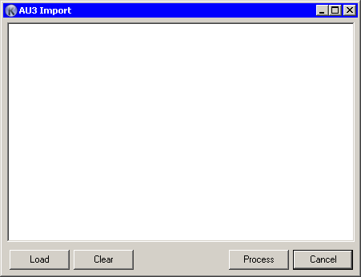

Koda provides a conversion facility for Autoit GUI scripts into Koda's own form format.

Using this dialog you can paste scripts from the clipboard or load a file using the Load button. The conversion function supports a single source script at a time. The major benefit of this function is the removal of unnecessary parts from the source script and the reduction of duplication from existing scripts. Text in the editor remains current for one session only and is terminated by either closing Koda (or clicking the Clear button), which provides you with multiple opportunities to make the desired changes.
When you have completed your desired changes, click Process button.
 This is still not perfect and not intended for regular use. The main goal of this converter is to - open old GUI scripts, or for those scripts where the kxf file is not available.
This is still not perfect and not intended for regular use. The main goal of this converter is to - open old GUI scripts, or for those scripts where the kxf file is not available.